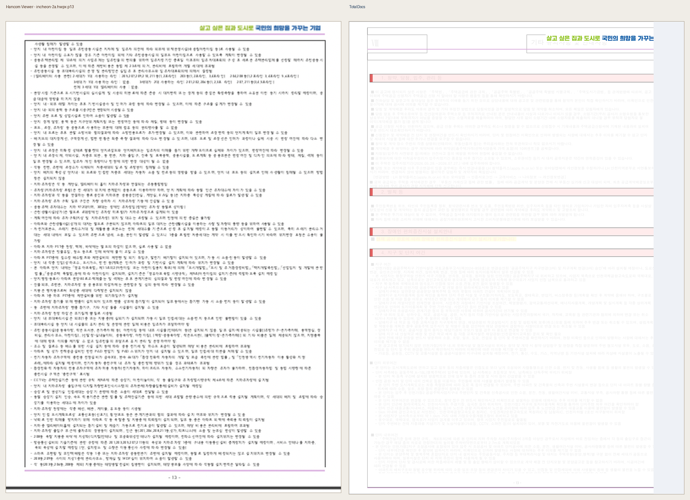
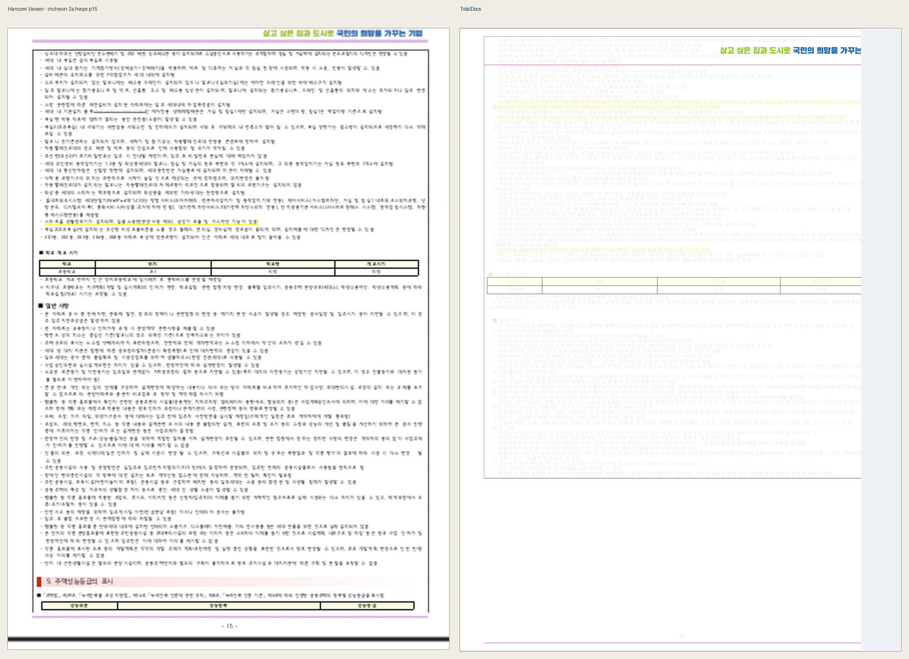

incheon-2a.hwpx
/Users/shinehandmac/Github/ChromeHWP/output/playwright/inputs/incheon-2a.hwpx
pages 18 · severity {'advisory': 10} · verdicts {'review': 10}
13쪽 · advisory · review · raw 19.273 · blur 17.517 · layout 40.804
advisory: raw pixel diff requires human visual review; this is not a clean pass.

15쪽 · advisory · review · raw 20.275 · blur 18.869 · layout 42.084
advisory: raw pixel diff requires human visual review; this is not a clean pass.

13쪽 · advisory · review · raw 19.133 · blur 17.443 · layout 41.486
advisory: raw pixel diff requires human visual review; this is not a clean pass.
15쪽 · advisory · review · raw 20.201 · blur 18.843 · layout 42.294
advisory: raw pixel diff requires human visual review; this is not a clean pass.
13쪽 · advisory · review · raw 19.003 · blur 17.383 · layout 41.488
advisory: raw pixel diff requires human visual review; this is not a clean pass.
15쪽 · advisory · review · raw 20.129 · blur 18.816 · layout 42.294
advisory: raw pixel diff requires human visual review; this is not a clean pass.
13쪽 · advisory · review · raw 18.723 · blur 17.240 · layout 41.667
advisory: raw pixel diff requires human visual review; this is not a clean pass.
15쪽 · advisory · review · raw 19.973 · blur 18.763 · layout 42.424
advisory: raw pixel diff requires human visual review; this is not a clean pass.
13쪽 · advisory · review · raw 18.472 · blur 17.141 · layout 41.917
advisory: raw pixel diff requires human visual review; this is not a clean pass.
15쪽 · advisory · review · raw 19.834 · blur 18.731 · layout 42.444
advisory: raw pixel diff requires human visual review; this is not a clean pass.